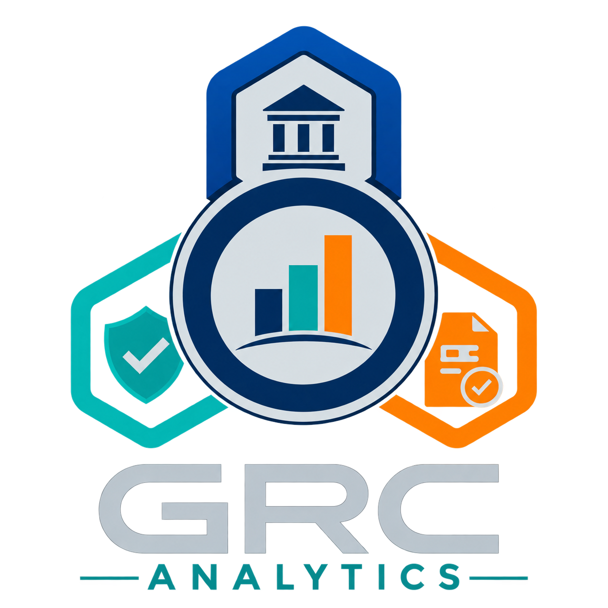
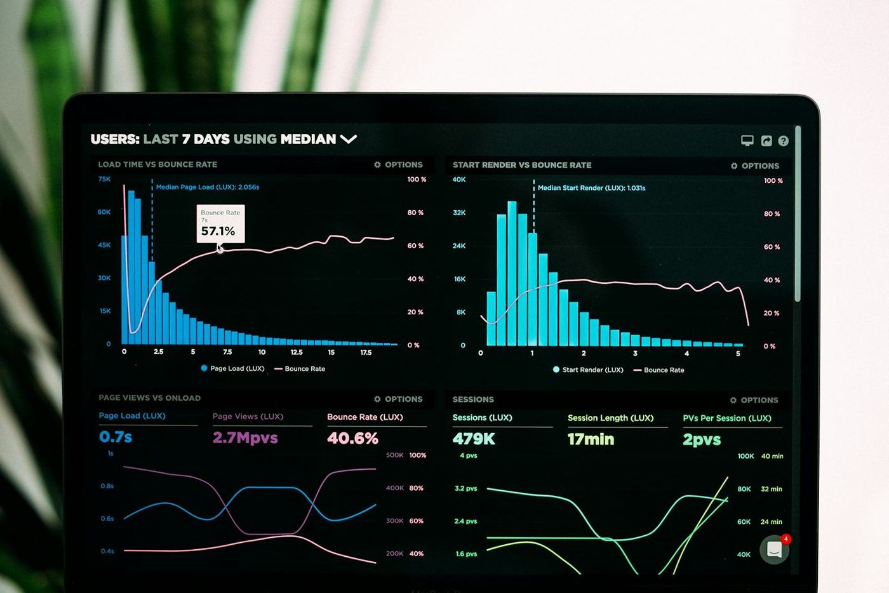

Automação com IA
Documentos, comunicados e rotinas administrativas executados automaticamente.

Falar com especialista ↗AUTOMAÇÃO COM IA & BUSINESS INTELLIGENCE
Automatizamos tarefas repetitivas, conectamos sistemas e transformamos dados em indicadores. Soluções adaptadas à necessidade da sua empresa.

A IA interpreta as informações e aplica as regras definidas para cada processo.
Documentos, comunicados e rotinas administrativas executados automaticamente.
APIs, bancos de dados, SharePoint, OneDrive, TMS, ERP e portais conectados.
Indicadores para acompanhar a operação e os resultados.
AUTOMAÇÕES COM INTELIGÊNCIA ARTIFICIAL
Da captura da informação à execução no sistema, conforme as regras da sua empresa. Sua equipe deixa de digitar e conferir e passa a cuidar do que é estratégico.
Rotinas programadas, inclusive fora do expediente, conforme a necessidade da operação.
Leitura, validação e lançamento de documentos nos sistemas.
Geração e envio de comunicados com informações da operação.
Coleta de arquivos e organização em pastas com nomes padronizados.
COMO A AUTOMAÇÃO FUNCIONA
Cada fluxo é desenhado a partir do seu processo: de onde vem a informação, quais regras precisam ser aplicadas e onde o resultado deve chegar.
SISTEMAS E CANAIS
Experiência em transporte e logística: as automações conversam com os sistemas da rotina, sem trocar a forma como sua equipe trabalha.
Cada fluxo pode ser adaptado ao processo, aos sistemas e às regras do negócio.
Vamos entender seu processo e definir a solução.
EXPERIÊNCIA EM POWER BI
Indicadores objetivos para acompanhar a rotina e identificar o que exige atenção. Painéis construídos para transportadoras e operações logísticas.
Programação, entregas, pendências e logística reversa.
Consumo, custo por km e desempenho dos veículos.
Ordens de serviço, gastos, estoque e descarte.
Horas extras, excessos de jornada e tempos de carga.
Pagamentos, vencimentos, receita e metas.
Status de cotações, captação e disponibilidade.
Finalizados 71
Pendentes 15
ANÁLISES DE DADOS
Leitura aprofundada dos dados da operação para encontrar o que está escondido na rotina e apoiar decisões com segurança.

ACOMPANHAMENTO CONTÍNUO
VAMOS CONVERSAR
Conte qual rotina sua empresa precisa melhorar. Retornaremos para entender o seu processo e construir o melhor caminho — automação com IA, integração ou dashboard.